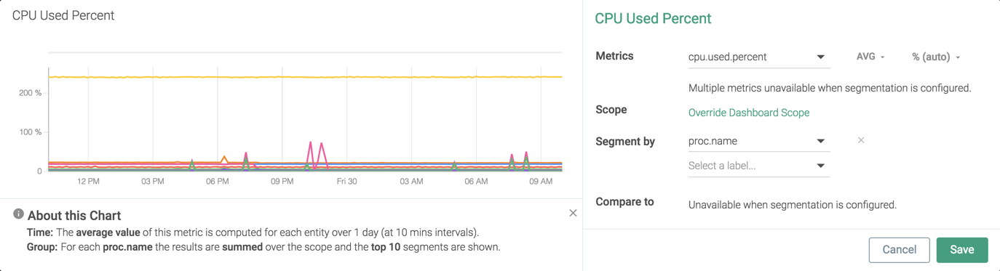

Metrics
Metrics are quantitative values or measures that can be grouped/divided by labels. Sysdig Monitor metrics are divided into two groups: default metrics (out-of-the-box metrics concerning the system, orchestrator, and network infrastructure), and custom metrics(JMX, StatsD, and multiple other integrated application metrics).
Sysdig automatically collects all types of metrics, and auto-labels them. Custom metrics can also have custom (user-defined) labels.
Out-of-the box, when an agent has been deployed on a host, Sysdig Monitor automatically begins collecting and reporting on a wide array of metrics. The sections below describe how those metrics are conceptualized within the system.
Learn more about the metrics types and the data aggregation techniques supported by Sysdig Monitor in the following sections:
Understanding Default, Custom, and Missing Metrics
Default metrics include various kinds of metadata which Sysdig Monitor automatically knows how to label, segment, and display.
For example:
System metrics for hosts, containers, and processes (CPU used, etc.)
Orchestrator metrics (collected from Kubernetes, Mesos, etc.)
Network metrics (e.g. network traffic)
HTTP
Platform metrics (in some cases)
Default metrics are collected mainly from two sources: syscalls and Kubernetes.
Custom Metrics
This section introduces you to custom metrics in Sysdig parlance.
About Custom Metrics
Custom metrics generally refer to any metrics that the Sysdig Agent collects from some third-party integration. The type of infrastructure and applications integrated determine the custom metrics that the Agent collects and reports to Sysdig Monitor. The supported custom metrics are:
Each metric comes with a set of custom labels, and additional labels can be user-created. Sysdig Monitor simply collects and reports them with minimal or no internal processing. The limit currently enforced is 3000 metrics per host. Use the metrics_filter option in the dragent.yaml file to remove unwanted metrics or to choose the metrics to report when hosts exceed this limit. For more information on editing the dragent.yaml file, see Understanding the Agent Config Files.
Unit for Custom Metrics
Sysdig Monitor detects the default unit of custom metrics automatically with the delimiter suffix in the metrics name. For example, custom_expvar_time_seconds results in a base unit set to seconds. The supported base units are byte, percent, and time. Custom metrics name should carry one of the following delimiter suffixes in order for Sysdig Monitor to identify and configure the accurate unit type.
second
seconds
byte
bytes
total (represents accumulating count)
percent
Custom metrics will not be auto-detected and the unit will be incorrect unless this naming convention is followed. For instance, custom_byte_expvar will not yield the correct unit, that is MiB.
Editing the Unit Scale
You have the flexibility to change the unit scale either by editing the panel on the Dashboard or in the Explore.
Explore
From the Search Metrics and Dashboard drop-down, select the custom metrics you want to edit the unit selection for, then click More Options. Select the desired unit scale from the Metric Format drop-down and click Save.
Dashboard
Select the Dashboard Panel associated with the custom metrics you want to modify. Select the desired unit scale from the Metricsdrop-down and click Save.
Heuristic and Deprecated Metrics
Heuristic Metrics
Various network-related metrics reported by Sysdig, including response times, are calculated at the kernel level by measuring latency between systems calls. In an effort to ensure Sysdig remains the trusted source of infrastructure insights, moving forward we will be labeling some network related metrics as heuristic and are tagging with the symbol in the application.
Note
Existing alerts using these metrics will not be modified or disabled. However, these alerts will not be able to be updated.
Additional heuristic metric details are listed below:
Metric | Set New Alerts |
|---|---|
net.http.request.time | Yes |
net.http.request.count | Yes |
net.http.error.count | Yes |
net.sql.request.time | Yes |
net.sql.request.count | Yes |
net.sql.error.count | Yes |
net.mongodb.request.time | Yes |
net.mongodb.request.count | Yes |
net.mongodb.error.count | Yes |
net.request.time.file.percent | Yes |
net.request.time.local.percent | Yes |
net.request.time.net.percent | Yes |
net.request.time.nextTiers.percent | Yes |
net.request.time.processing.percent | Yes |
net.request.time | No |
No | |
net.request.time.out | No |
No | |
net.request.time.worst.out | No |
net.request.count | No |
No |
Deprecated Metrics:
Based on low usage patterns, Sysdig has decided to deprecate the following metrics on August 1, 2018. Users will continue to have the ability to collect similar data using Prometheus, or another method of code instrumentation (i.e. StatsD or JMX for Java applications).
The table below shows the current metrics and options for similar functionality.
Current Metric | Alternative Starting August 1, 2018 |
|---|---|
capacity.estimated.request.stolen.count | Create your application metrics using Prometheus, StatsD or JMX for Java applications |
capacity.estimated.request.total.count | |
capacity.stolen.percent | |
capacity.total.percent | |
capacity.used.percent | |
net.request.time.file | |
net.request.time.local | |
net.request.time.nextTiers | |
net.request.time.processing | |
net.sql.request.time.worst | Max aggregation (net.sql.request.time) |
net.mongodb.request.time.worst | Max aggregation (net.mongodb.request.time) |
net.http.request.time.worst | Max aggregation (net.http.request.time) |
Note
Reach out to the Sysdig customer success team for best practices by clicking the in-app chat icon, or email the support team at support@sysdig.com (or submit a ticket).
Manage Metric Scale
Sysdig provides several knobs for managing metric scale.
There are three primary ways in which you could include/exclude metrics, should you encounter unwanted metrics limits.
Include/exclude custom metrics by name filters.
Include/exclude metrics emitted by certain containers, Kubernetes annotations, or any other container label at collection time.
Exclude metrics from unwanted ports.
See Blacklist Ports.
Empty or missing topic
Data Aggregation
Sysdig Monitor allows users to adjust the aggregation settings when graphing or creating alerts for a metric, informing how Sysdig rolls up the available data samples in order to create the chart or evaluate the alert. There are two forms of aggregation used for metrics in Sysdig: time aggregation and group aggregation.
Note
Time aggregation is always performed before group aggregation.
Time Aggregation
Time aggregation comes into effect in two overlapping situations:
Charts can only render a limited number of data points. To look at a wide range of data, Sysdig Monitor may need to aggregate granular data into larger samples for visualization.
Sysdig Monitor rolls up historical data over time.
Note
Sysdig retains rollups based on each aggregation type, to allow users to choose which datapoints to utilize when evaluating older data.
By default, Sysdig agents collect and report metrics at a 10 second resolution. For time series charts covering five minutes or less, datapoints are drawn at this 10 second resolution, and any time aggregation selections will have no effect. When an amount of time greater than five minutes is displayed, data points are drawn as an aggregate for an appropriate time interval. For example, for a chart covering one hour, each datapoint would reflect a one minute interval.
At time intervals of one minute and above, charts can be configured to display different aggregates for the 10 second metrics used to calculate each datapoint.
Aggregation Type | Description |
|---|---|
average | The average of the retrieved metric values across the time period. |
rate | The average value of the metric across the time period evaluated. |
maximum | The highest value during the time period evaluated. |
minimum | The lowest value during the time period evaluated. |
sum | The combined sum of the metric across the time period evaluated. |
In the example images below, the kubernetes.deployment.replicas.available metrics first uses the average for time aggregation:
Then uses the sum for time aggregation:
 |
Rate and average are very similar and often provide the same result. However, the calculation of each is different.
If time aggregation is set to one minute, the agent is supposed to retrieve six samples (one every 10 seconds).
In some cases, samples may not be there, due to disconnections or other circumstances. For this example, four samples are available. If this was the case, the
averagewould be calculated by dividing by four, while theratewould be calculated by dividing by six.
Most metrics are sampled once for each time interval, resulting in average and rate returning the same value. However, there will be a distinction for any metrics not reported at every time interval. For example, some custom statsd metrics.
Rate is currently referred to as
timeAvgin the Sysdig Monitor API and advanced alerting language.By default, average is used when displaying data points for a time interval.
Group Aggregation
Metrics applied to a group of items (for example, several containers, hosts, or nodes) are averaged between the members of the group by default. For example, three hosts report different CPU usage for one sample interval. The three values will be averaged, and reported on the chart as a single datapoint for that metric.
There are several different types of group aggregation:
Aggregation Type | Description |
|---|---|
average | The average value of the interval's samples. |
maximum | The maximum value of the interval's samples. |
minimum | The minimum value of the interval's samples. |
sum | The combined value of all of the interval's samples. |
If a chart or alert is segmented, the group aggregation settings will be utilized for both aggregations across the whole group, and aggregation within each individual segmentation.
For example, the image below shows a chart for CPU% across the infrastructure:
 |
When segmented by proc.name , the chart shows one CPU% line for each process:
Each line provides the average value for every process with the same name. To see the difference, change the group aggregation type to sum:
|  |
The metric aggregation value showed beside the metric name is for the time aggregation. While the screenshot shows AVG, the group aggregation is set to SUM.
Aggregation Examples
The tables below provide an example of how each type of aggregation works. The first table provides the metric data, while the second displays the resulting value for each type of aggregation.
 |
In the example below, the CPU% metric is applied to a group of servers called webserver. The first chart shows metrics using average aggregation for both time and group. The second chart shows the metrics using maximum aggregation for both time and group.
For each one minute interval, the second chart renders the highest CPU usage value found from the servers in the webserver group and from all of the samples reported during the one minute interval. This view can be useful when searching for transient spikes in metrics over long periods of time, that would otherwise be missed with average aggregation.
Note
The group aggregation type is dependent on the segmentation. For a view showing metrics for a group of items, the current group aggregation setting will revert to the default setting, if the Segment By selection is changed.
Data Retention
Sysdig's basic data retention values are as follows:
10 second timeline retained for 4 hours
1 minute timeline retained for 2 days
10 minute timeline retained for 2 weeks
1 hour timeline retained for 2 months
1 day timeline retained for 15 months (10 years for Pro accounts)
Note
Different pricing plans may have different settings. These will be defined in the Sysdig license agreement.
When a host or instance is no longer monitored (i.e. when an agent is uninstalled), the historical data continues to be retained for the stated times.
Note
If required, it is possible to change the standard data retention settings using Sysdig's REST API. A Sysdig support team or professional services member should assist, as there are a variety of storage and timeline implications to consider before making such a change.